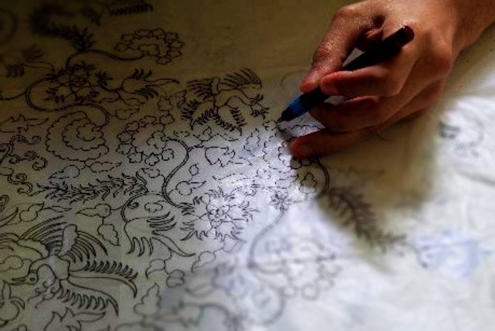
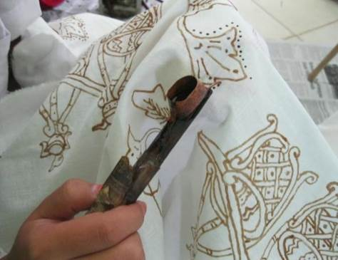
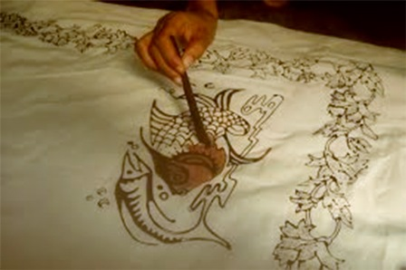
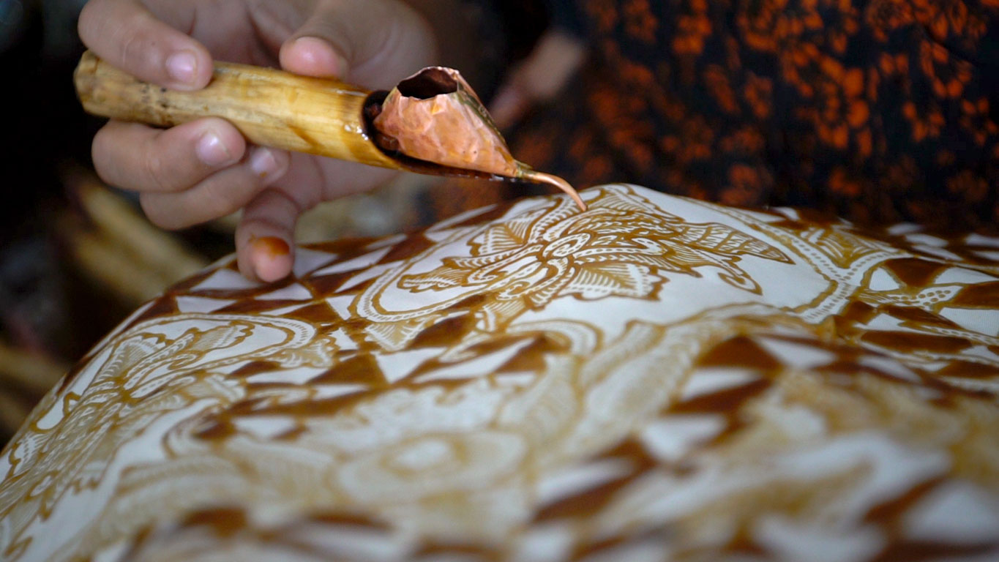
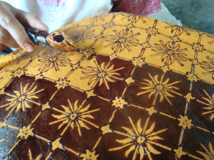
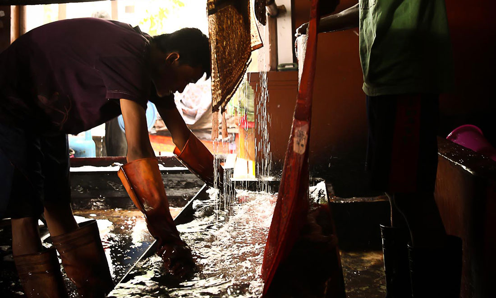
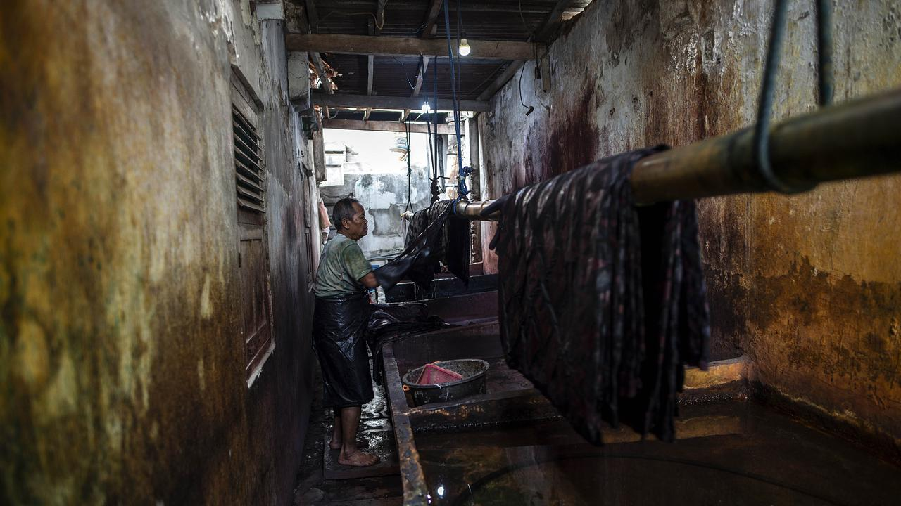
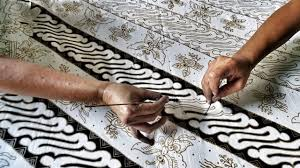
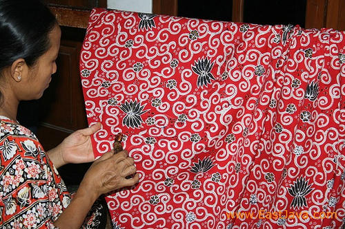
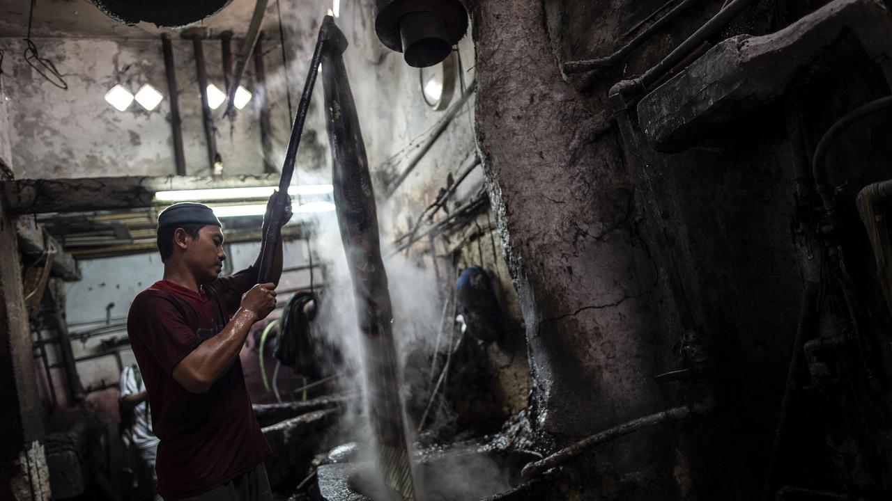

CARA MEMBUAT BATIK
1.NYUNGGING
Proses pertama dalam pembuatan batik tulis yaitu membuat pola di atas kertas tidak sembarang orang bisa mengerjakan proses ini.

2.NJAPLAK
Proses yang kedua yaitu memindahkan pola yang sudah dibuat dari kertas ke kain.

3.NGLOWONG
Di proses ini pembatik mulai melekatkan malam atau lilin sesuai dengan pola yang dibuat.
4.NGISENI
Di proses ini pembatik mulai melekatkan isian atau disebut isen-isen pada bagian tertentu seperti gambar tumbuhan atau hewan.

5.NYOLET
Di proses ini pembatik memberikan warna bada bagian-bagian tertentu dengan kuas.

6.MOPOK
Di proses ini pembatik menutup bagian yang telah dicolet dengan malam.

7.NEMBOK
Pembatik menutup bagian latar belakang pola yang tidak perlu diwarnai.

8.NGELIR
Disini pembatik mulai mewarnai seluruh bagian batik dengan memasukkanya kedalam pewarna alami atau kimia.

9.NGLOROD
Di proses nglorod ini memiliki 2 kali tahapan, di tahapan nglorod yang pertama malam diluruhkan untuk pertama kalinya dengan merendamnya di dalam air yang mendidih.

10.NGRENTESI
Di proses ini pembatik memberikan titik pada klowongan menggunakan jarum tipis khusus

11.NYUMRI
Di proses ini pembatik menutup bagian tertentu dengan malam.
